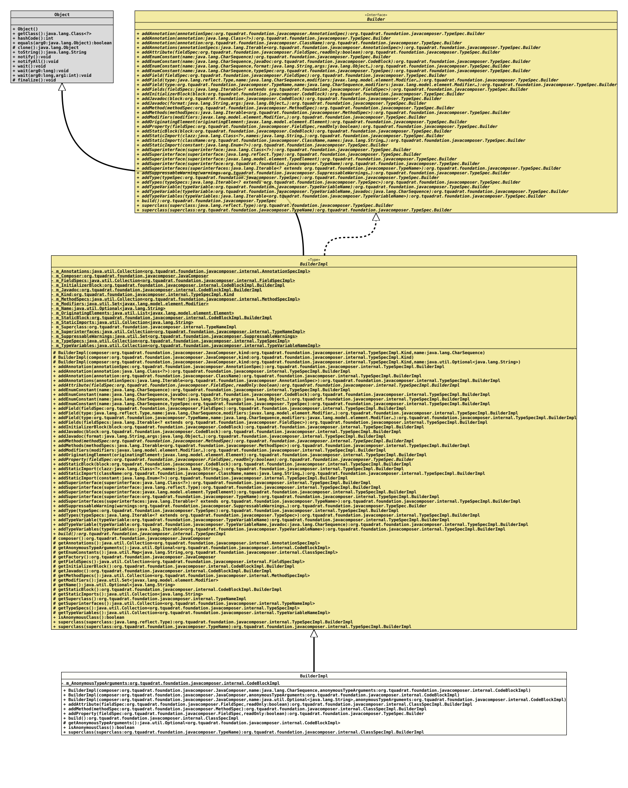

Class ClassSpecImpl.BuilderImpl
- All Implemented Interfaces:
TypeSpec.Builder
- Enclosing class:
ClassSpecImpl
TypeSpec.Builder
for a class.- Author:
- Square,Inc.
- Modified by:
- Thomas Thrien (thomas.thrien@tquadrat.org)
- Version:
- $Id: ClassSpecImpl.java 1151 2025-10-01 21:32:15Z tquadrat $
- Since:
- 0.2.0
- UML Diagram
-

UML Diagram for "org.tquadrat.foundation.javacomposer.internal.ClassSpecImpl.BuilderImpl"
{kind=link}
-
Field Summary
Fields -
Constructor Summary
ConstructorsConstructorDescriptionBuilderImpl(JavaComposer composer, CharSequence name, CodeBlockImpl anonymousTypeArguments) Creates a newBuilderImplinstance.BuilderImpl(JavaComposer composer, Optional<String> name, CodeBlockImpl anonymousTypeArguments) Creates a newBuilderImplinstance.BuilderImpl(JavaComposer composer, CodeBlockImpl anonymousTypeArguments) Creates a newBuilderImplinstance for an anonymous type. -
Method Summary
Modifier and TypeMethodDescriptionaddAttribute(FieldSpec fieldSpec, boolean readOnly) Adds an attribute to this type.addMethod(MethodSpec methodSpec) Adds a method for the type.final TypeSpec.BuilderaddProperty(FieldSpec fieldSpec, boolean readOnly) Adds a JavaBean property to this type.final ClassSpecImplbuild()Builds a newTypeSpecinstance from the added components.protected final Optional<CodeBlockImpl> Returns the anonymous type arguments for the new type.final booleanReturns a flag whether this class is an anonymous class or not.superclass(TypeName superclass) Sets the superclass for the type.Methods inherited from class TypeSpecImpl.BuilderImpl
addAnnotation, addAnnotation, addAnnotation, addAnnotations, addEnumConstant, addEnumConstant, addEnumConstant, addEnumConstant, addField, addField, addField, addFields, addInitializerBlock, addJavadoc, addJavadoc, addMethods, addModifiers, addOriginatingElement, addStaticBlock, addStaticImport, addStaticImport, addStaticImport, addSuperinterface, addSuperinterface, addSuperinterface, addSuperinterface, addSuperinterfaces, addSuppressableWarning, addType, addTypes, addTypeVariable, addTypeVariable, addTypeVariables, composer, getAnnotations, getEnumConstants, getFactory, getFieldSpecs, getInitializerBlock, getJavadoc, getMethodSpecs, getModifiers, getName, getStaticBlock, getStaticImports, getSuperclass, getSuperinterfaces, getTypeSpecs, getTypeVariables, superclass
-
Field Details
-
m_AnonymousTypeArguments
The anonymous type arguments.
-
-
Constructor Details
-
BuilderImpl
Creates a newBuilderImplinstance.- Parameters:
composer- The reference to the factory that created this builder instance.name- The name of the type to build.anonymousTypeArguments- Anonymous type arguments.
-
BuilderImpl
Creates a newBuilderImplinstance for an anonymous type.- Parameters:
composer- The reference to the factory that created this builder instance.anonymousTypeArguments- Anonymous type arguments.
-
BuilderImpl
public BuilderImpl(JavaComposer composer, Optional<String> name, CodeBlockImpl anonymousTypeArguments) Creates a newBuilderImplinstance.- Parameters:
composer- The reference to the factory that created this builder instance.name- The name of the type to build.anonymousTypeArguments- Anonymous type arguments.
-
-
Method Details
-
addAttribute
@API(status=STABLE, since="0.2.0") public final ClassSpecImpl.BuilderImpl addAttribute(FieldSpec fieldSpec, boolean readOnly) Adds an attribute to this type.
An attribute is basically a field with the related accessor and mutator methods.
If the name for a non-final property will be
text, and its type isjava.lang.String, the generated code will look basically like this:… private String m_Text; … public final String text() { return m_Text; } … public final void text( final String value ) { m_Text = text; } …If accessor or mutator needs to be more complex, the respective methods must be created manually.
- Specified by:
addAttributein interfaceTypeSpec.Builder- Specified by:
addAttributein classTypeSpecImpl.BuilderImpl- Parameters:
fieldSpec- The field definition.readOnly-trueif no mutator should be created even for a non-final field,falseif a mutator has to be created for a non-final field. Will ignored if the field is final.- Returns:
- This
Builderinstance.
-
addMethod
Adds a method for the type.- Specified by:
addMethodin interfaceTypeSpec.Builder- Specified by:
addMethodin classTypeSpecImpl.BuilderImpl- Parameters:
methodSpec- The method.- Returns:
- This
Builderinstance.
-
addProperty
Adds a JavaBean property to this type.
A property is basically a field with the related getter and setter methods.
If the name for a non-final property will be
text, and its type isjava.lang.String, the generated code will look basically like this:… private String m_Text; … public final String getText() { return m_Text; } … public final void setText( final String value ) { m_Text = text; } …If getter or setter needs to be more complex, the respective methods must be created manually.
- Specified by:
addPropertyin interfaceTypeSpec.Builder- Specified by:
addPropertyin classTypeSpecImpl.BuilderImpl- Parameters:
fieldSpec- The field definition.readOnly-trueif no setter should be created even for a non-final field,falseif a setter has to be created for a non-final field. Will ignored if the field is final.- Returns:
- This
Builderinstance.
-
build
Builds a newTypeSpecinstance from the added components.- Specified by:
buildin interfaceTypeSpec.Builder- Specified by:
buildin classTypeSpecImpl.BuilderImpl- Returns:
- The new
TypeSpecinstance.
-
getAnonymousTypeArguments
Returns the anonymous type arguments for the new type.- Overrides:
getAnonymousTypeArgumentsin classTypeSpecImpl.BuilderImpl- Returns:
- An instance of
Optionalthat holds the codeblock with the anonymous type arguments.
-
isAnonymousClass
Returns a flag whether this class is an anonymous class or not.- Overrides:
isAnonymousClassin classTypeSpecImpl.BuilderImpl- Returns:
trueif the class is an anonymous class,falseif it is named.
-
superclass
Sets the superclass for the type. This class is extended by the new type.
- Specified by:
superclassin interfaceTypeSpec.Builder- Overrides:
superclassin classTypeSpecImpl.BuilderImpl- Parameters:
superclass- The superclass.- Returns:
- This
Builderinstance.
-